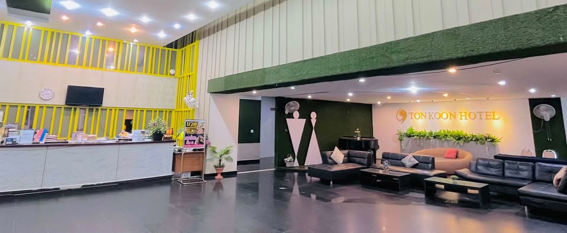

Aboutเกี่ยวกับเรา
โรงแรมต้นคูน — Ton Koon Hotel
โรงแรมต้นคูน — อุดรธานี
Ton Koon Hotel is a city hotel on Mak Khaeng Road in Mueang Udon Thani. Guests come for a practical, comfortable base near Nong Prajak Park and the Central area — with air-conditioned rooms, free Wi‑Fi, free parking, and a front desk that welcomes you around the clock.
โรงแรมต้นคูนเป็นโรงแรมในเมือง ตั้งอยู่บนถนนหมากแข้ง อำเภอเมืองอุดรธานี ผู้เข้าพักเลือกที่นี่เพื่อความสะดวกใกล้หนองประจักรและย่านเซ็นทรัล — ห้องแอร์ Wi‑Fi ฟรี ที่จอดรถฟรี และเคาน์เตอร์ต้อนรับตลอด 24 ชั่วโมง
Visit usแวะมาหาเรา
Always open for enquiries
พร้อมรับการสอบถามตลอด
Reception runs with a 24-hour vibe. Reach us by phone, email, or Facebook — we’ll help with rates, directions, and availability.
เคาน์เตอร์ต้อนรับพร้อมดูแลตลอด 24 ชั่วโมง ติดต่อทางโทรศัพท์ อีเมล หรือ Facebook — เราช่วยเรื่องราคา เส้นทาง และห้องว่าง